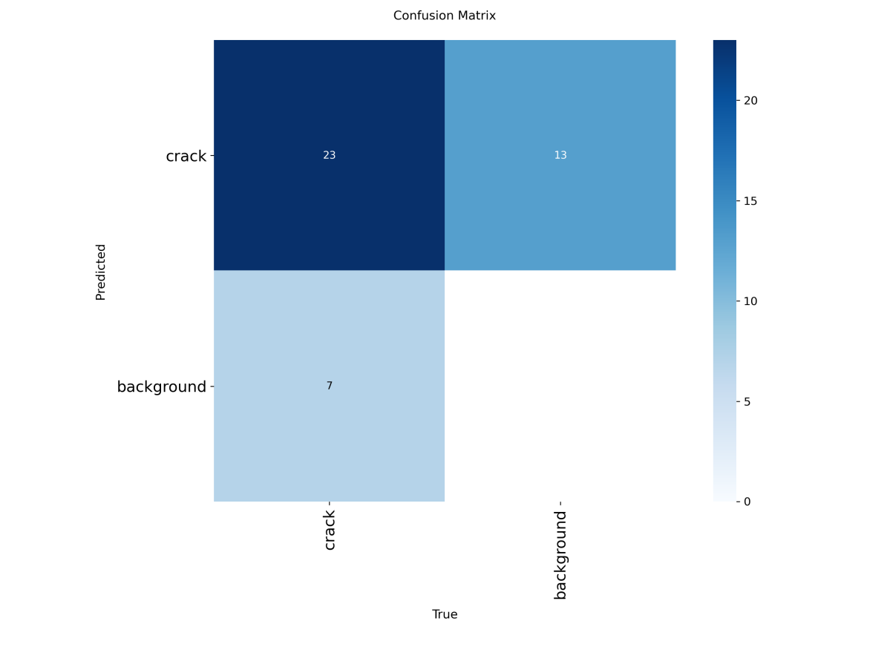
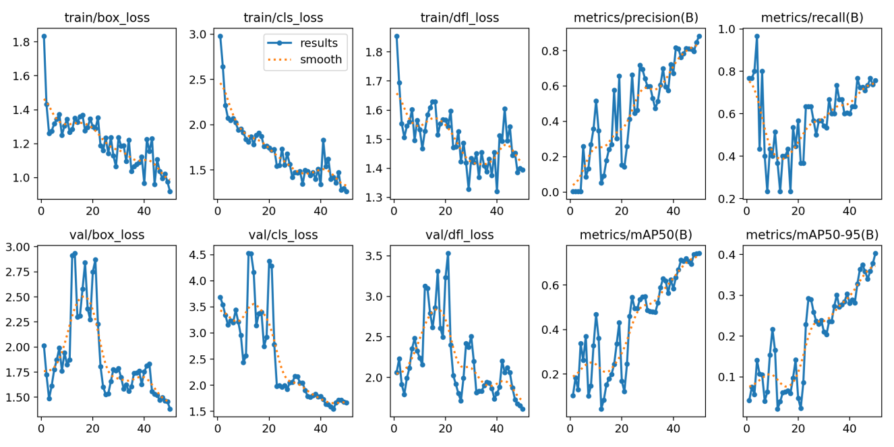

Surface Crack Detection with YOLOv8
- Domain
- Computer vision inspection
- Year
- 2025
- Team
- Individual project
- Course
- ME-404 Artificial Intelligence for Mechanical Engineers
- Tools
- YOLOv8
- Google Colab
- makesense.ai
- Result
- Test set: 23 cracks found, 7 missed, 11 false alarms
Summary
What
Single-class crack detector for concrete and pavement images, trained in Google Colab with YOLOv8.
Role
Labelled 125 images, trained a YOLOv8 crack detector in Google Colab and tested it on 25 held-out images, as sole author.
Results
- 125 labelled images, split into 100 for training and 25 for testing.
- Test confusion matrix: 23 cracks found, 7 missed and 11 false alarms.
- Misses were mostly thin or low-contrast cracks.

Problem
Detect visible cracks on concrete or pavement surfaces with bounding boxes using a deep learning detector.
Method
- Labelled 125 images in makesense.ai with YOLO-format annotations for one class (crack), using 100 images for training and 25 for testing.
- Trained YOLOv8 through the Ultralytics framework in Google Colab for 50 epochs at 640 x 640 with the default optimizer and loss.
- Evaluated on the test set with a confusion matrix and detections on unseen images.
Results
The test confusion matrix shows 23 cracks detected, 7 missed and 11 false alarms on background. Training loss falls steadily, and precision, recall and mAP rise over the 50 epochs. False negatives come mainly from thin or low-contrast cracks.




Validation
Evaluated on 25 held-out test images with a confusion matrix.
Limitations
- Very small dataset, with a 25-image test set and no cross-validation.
- No single accuracy or mAP figure is stated in the report text.
- False alarms occur on background regions.
Tools
- YOLOv8
- Google Colab
- makesense.ai